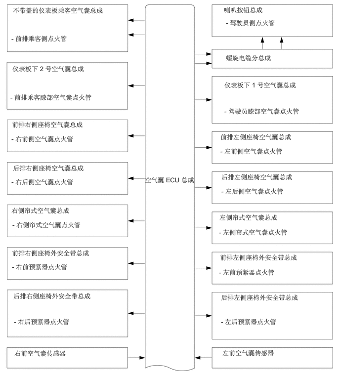

0.271,0.135 2.469,0.635
2.188,0.49
10
false
不带盖的仪表板乘客空气囊总成
0.24,0.729 2.229,0.99
1.979,0.25
10
false
- 前排乘客侧点火管
0.26,1.365 2.104,1.844
1.833,0.469
10
false
仪表板下 2 号空气囊总成
0.219,1.969 2.563,2.219
2.333,0.24
10
false
- 前排乘客膝部空气囊点火管
0.25,2.542 2.323,2.823
2.063,0.271
10
false
前排右侧座椅空气囊总成
0.24,2.844 2.219,3.125
1.969,0.271
10
false
- 右前侧空气囊点火管
0.271,3.458 2.333,3.729
2.052,0.26
10
false
后排右侧座椅空气囊总成
0.24,3.75 2.104,4.021
1.854,0.26
10
false
- 右后侧空气囊点火管
0.24,4.354 2.552,4.604
2.302,0.24
10
false
右侧帘式空气囊总成
0.26,4.656 2,4.927
1.729,0.26
10
false
- 右侧帘式空气囊点火管
0.25,5.25 2.521,5.5
2.26,0.24
10
false
前排右侧座椅外安全带总成
0.25,5.542 2.188,5.802
1.927,0.25
10
false
- 右前预紧器点火管
0.281,6.156 2.646,6.479
2.354,0.313
10
false
后排右侧座椅外安全带总成
0.292,6.698 2.25,7.031
1.948,0.323
10
false
- 右后预紧器点火管
0.302,7.365 1.896,7.625
1.583,0.25
10
false
右前空气囊传感器
3.052,3.708 4.146,4.25
1.083,0.531
10
false
空气囊 ECU 总成
4.719,0.125 6.26,0.375
1.531,0.24
10
false
喇叭按钮总成
4.76,0.396 6.063,0.667
1.292,0.26
10
false
- 驾驶员侧点火管
4.76,1.135 6.583,1.406
1.813,0.26
10
false
螺旋电缆分总成
4.729,1.708 6.563,2.333
1.823,0.615
10
false
仪表板下 1 号空气囊总成
4.729,2.26 6.427,2.531
1.688,0.26
10
false
- 驾驶员膝部空气囊点火管
4.646,2.802 6.635,3.094
1.979,0.281
10
false
前排左侧座椅空气囊总成
4.646,3.104 6.458,3.417
1.802,0.302
10
false
- 左前侧空气囊点火管
4.667,3.646 6.667,3.875
1.99,0.219
10
false
后排左侧座椅空气囊总成
4.667,3.948 6.49,4.219
1.813,0.26
10
false
- 左后侧空气囊点火管
4.625,4.5 6.865,4.74
2.229,0.229
10
false
左侧帘式空气囊总成
4.615,4.813 6.271,5.083
1.646,0.26
10
false
- 左侧帘式空气囊点火管
4.635,5.344 6.948,5.635
2.302,0.281
10
false
前排左侧座椅外安全带总成
4.615,5.656 6.563,5.927
1.938,0.26
10
false
- 左前预紧器点火管
4.656,6.188 6.906,6.479
2.24,0.281
10
false
后排左侧座椅外安全带总成
4.656,6.698 6.531,6.969
1.865,0.26
10
false
- 左后预紧器点火管
4.688,7.354 6.281,7.656
1.583,0.292
10
false
左前空气囊传感器